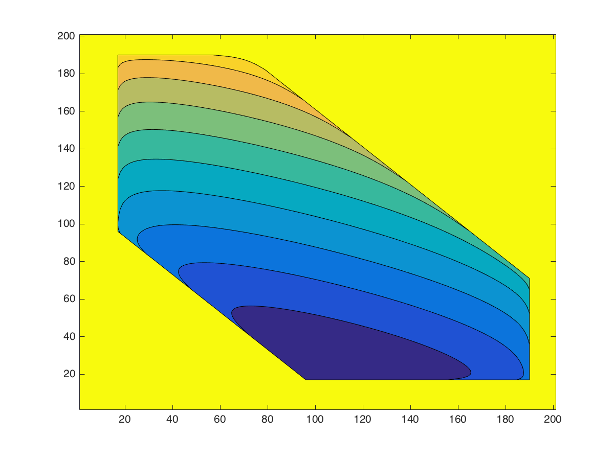
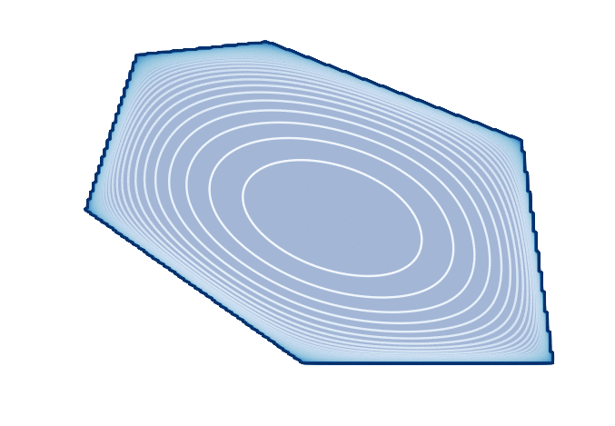
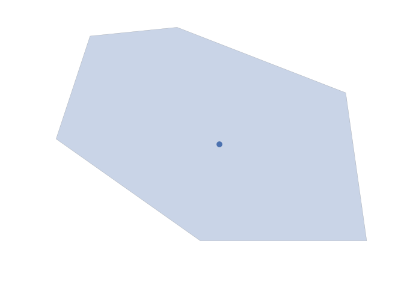
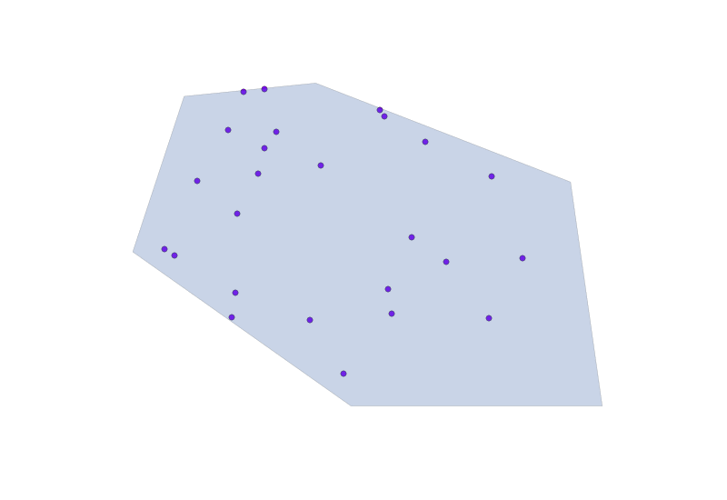
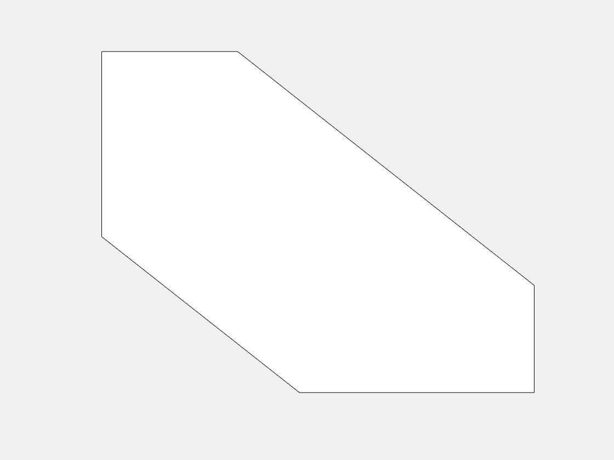
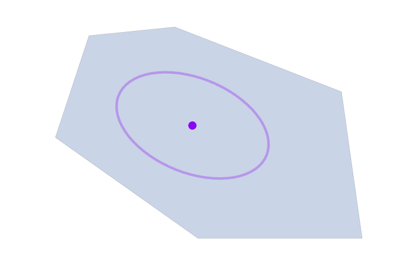

class: center, middle, inverse ## Faster Convex Optimization: Simulated Annealing with an Efficient Universal Barrier ### **Jacob Abernethy** and Elad Hazan #### June 21, 2016 \[ \def\DD{\mathbf{D}} \def\EE{\mathop{\mathbb{E}}} \def\argmin{\mathop{\arg\min}} \def\argmax{\mathop{\arg\max}} \def\K{\mathcal{K}} \] --- class: top # This Talk * Quick overview of Interior Point Methods * Self concordant barrier functions * Path following methods * Quick overview of Simulated Annealing * Random walk methodology * Hit-and-Run Markov chain + mixing times * Temperature schedule -- * Magic Trick: these two technologies are, in a strong sense, **equivalent** --- class: top ## The Problem of Convex Optimization * Let $\K$ be a bounded convex set, and let $\theta$ be an input to our problem. We want to solve <div>$$ \min_{x \in \K} \theta^\top x $$</div> -- * This is, in some sense, the *most general* convex optimization possible. That is, we can always convert non-linear objective into a linear one. Let $f(\cdot)$ by any convex function, then <div>$$ \min_{x \in \K} \; f(x) \quad \rightarrow \quad \min_{\begin{align}(x,c) & \in \K \times \mathbb{R} \\ f(x) & \leq c \end{align} } \; c $$</div> -- * However, the fastest methods for optimization (e.g. Newton's method) work great when the function has guaranteed curvature. Quadratic functions, for example, are really easy to optimize! --- class: top ## Want Curvature? Add a Barrier Function! * Question: can we use 2nd-order methods with a linear objective? -- * Answer: add a barrier func. $\phi(\cdot)$ to "regularize" your objective: <div>$$ \min_{x \in \K}\; \theta^\top x + t \phi(x) $$</div> -- 1. $\phi(\cdot)$ should act as a “barrier”, i.e. $\phi(\cdot) \to \infty$ towards bndry($\K$) 1. $\phi(\cdot)$ should be “super-smooth”, ... what does that mean? -- * .paper[Nesterov, Nemirovski]: We need $\phi(\cdot)$ to be a *self-concordant barrier function* (SCBF). That is, for all $x \in \text{int}(\K)$ and all $h$, <div> \begin{eqnarray*} \nabla^3\phi[h,h,h] & \leq & 2 (\nabla^2\phi[h,h])^{3/2}, \text{ and }\\ \nabla \phi[h] & \leq & \sqrt{\nu \nabla^2\phi[h,h]}, \end{eqnarray*} </div> * Parameter $\nu$ important, depends on $\phi(\cdot)$ and $\K$. (more later) --- class: top ## Linear Objective With/Without a Barrier .left-column[ * Linear Obj, no barrier <center><img src="../../assets/images/contour_lin1.png" width=80%></center> <div style="font-size:1.2em">$$\min_{x \in \K}\; \theta^\top x$$</div> ] .right-column[ * Obj w/ barrier function <center> </center> <div style="font-size:1.2em">$$\min_{x \in \K}\; \theta^\top x + t \phi(x)$$</div> ] --- class: top ## Basic Iterative Newton Update Scheme: $\text{Define } f\_t(x) := \theta^\top x + t \phi(x)$ <div>$ \begin{align*}\text{For } t & = 1, 2, \ldots: & \\ & G \leftarrow \nabla f_t(x_{k-1}) & \quad (\textbf{Compute Gradient}) \\ & H \leftarrow \nabla^2 f_t(x_{k-1}) & \quad (\textbf{Compute Hessian}) \\ & \tilde{x}_{k} \leftarrow x_{k-1} - \eta H^{-1} G & \quad (\textbf{Newton Step}) \\ & x_k \leftarrow \text{Proj}_K(\tilde{x}_{k}) & \quad (\textbf{Projection Step}) \end{align*} $</div> -- * **Facts:** If $\phi(\cdot)$ is a SCBF then 1. There is **no need** to do projections 2. When init point is "close", Newton convergence satisfies <div>$$ \text{# Iterations }\leq \log \log (1/ \epsilon) $$</div> --- class:top ## Path Following via Updating $t$ **Recall:** we want to minimize $f_t(x) = \theta^\top x + t \phi(x)$, but for $t = 0$. -- .left-column[ **Algorithm** (PathFollowing): **for** each iteration $k$ 1. Shrink $t$ by the "right" amount, 2. Perform single Newton update: $x \leftarrow x - \nabla^{-2}f\_t(x) \nabla f\_t(x) $ ] -- .right-column[ <center>  </center> ] -- <div> </div> <div> </div> * .paper[Nesterov, Nemirovski]: Ideal rate is $t_k = \left( 1 - 1/\sqrt{\nu}\right)^k$ * Grants a convergence rate of $\text{# iter} = O(\sqrt{\nu}\log(1/\epsilon))$ --- class:top ## This is the **Central Path** Set of minimizers for various $t$ is known as the **central path** -- <center>  </center> <div>$$\text{CentralPath}(t) := \argmin_{x \in \K} \theta^\top x + t \phi(x)$$</div> .paper[Nesterov, Nemirovski]: Each Newton update is guaranteed to *keep close* to the central path. This is why we call the method **Path Following**. --- class: top ## Alternative: Randomized Optimization Methods ### Introduction to Simulated Annealing -- * Key idea: do "random walks" around input space <center><img src="../../assets/images/Hill_Climbing_with_Simulated_Annealing.gif"></center> * The random walk should have higher probability on higher objective values * Turn down the "temperature" to "anneal" the distribution towards the optimal point. --- class: top ## Intuition Behind Simulated Annealing Define a family of distributions on $\K$: <div>$$ P_t(x) = \frac {\exp(-f(x)/t)} {\int_\K \exp(-f(z)/t)\, dz} $$</div> The parameter $t > 0$ is called the **temperature**. Notice: * When $t$ is very large, sampling from $P_t(\cdot)$ is equivalent to sampling from the uniform distribution on $\K$, which isn't too bad. * When $t$ is very small, all mass of $P_t(\cdot)$ is concentrated around minimizer of $f(x)$. That’s what we want! * If we choose a sequence of "slowly decaying" temperatures $t\_1 > t\_2 > \ldots$, then $P\_{t\_{i}}$ is not far from $P\_{t\_{i+1}}$. I.e. we can “warm start” from previous samples. --- class:top ## Simulated Annealing in Action * We generate 25 points from the dist. $P\_t(x) = \frac {\exp(-f(x)/t)} {\int\_\K \exp(-f(z)/t)\, dz}$ * We slowly decrease the temperature $t$ so the distribution *anneals* towards the optimum <center>  </center> --- class: top ## How to sample from $P_t(\cdot)$? Hit-and-Run! * .paper[Smith 1985]: The Hit-and-Run algorithm provides a generic tool for sampling from convex bodies. * .paper[Lovasz 1999], .paper[Lovasz, Vempala 2003], etc.: Hit-and-Run mixes quickly for general log-concave distributions. -- <center>  </center> * Hit-and-Run only needs a membership oracle! * Assuming a "warm-start", mixing time is generally $\tilde O(n^3)$ --- class:top ## Convergence Rates of Simulated Annealing .paper[Kalai, Vempala 2006] proved convergence rate of $\tilde O(n^{4.5})$ oracle queries .left-column[ .smallish[ Analysis of .paper[Kalai, Vempala 2006] proved that needed conditions are 1. Successive distributions are "close to isotropic", **and** 1. Successive covariance ellipsoids must contain each other's means. 1. 1+2 are achieved with temp schedule $t_k := (1 - 1/\sqrt{n})^k$ ] ] -- .right-column[] <div> </div> Let's define the **Heat Path** as the sequence of expectations over various temps $t$. That is, <div> $$\text{HeatPath}(t) := \EE_{X\sim P_t}[X]$$ </div> --- class:top ## Magical Equivalence of Annealing and PathFollowing .paper[A., Hazan 2016]: With a precise choice of SCBF $\phi(\cdot)$, Simulated Annealing becomes **algorithmically equivalent** to Path Following. -- .left-column[ <center> .smallish[ | Newton Path Following | Simulated Annealing | |-------------------------------------------------------|---------------------------------------------| | $\text{CentralPath}(\lambda)$ | $\text{HeatPath}(t)$ | | $\displaystyle \argmin\_{x \in \K} \theta^\top x + \lambda \phi(x)$ | Mean of $P_t$ | | Inv. Hess. $\nabla^{-2}\phi(x)$ | Cov. Mtx of $P_t$ | | Optimal Schedule $\lambda_k = (1 - 1/\sqrt{\nu})^k$ | Optimal Schedule $t_k = (1 - 1/\sqrt{n})^k$ | ] </center> ] .right-column[ <center> $\text{CentralPath} \equiv \text{HeatPath}$!! </center> ] <div> </div> This observation leads to a faster rate for annealing in terms of the barrier parameter $\nu$, and often $\nu << n$ --- ## What is this magical function? Special choice of $\phi(\cdot)$ is Fenchel conjugate of *log-partition function*! <div>$$ \phi(x) := \sup_{\theta} \left\{ \theta^\top x - \log \int_\K \exp(-\theta^\top x) \, dx \right\} $$</div> This is known as the "entropic barrier" (.paper[Bubeck, Eldan 2015]) * .paper[Nesterov, Nemirovski] showed that, when $\K$ is a cone one always has a *universal barrier* $\phi\_{\K}(x) = \log \text{Vol}(\K^*(x))$. * .paper[Guler 1996] showed that indeed one has a much more natural interpretation $\phi\_{\K}(x) = \log \int\_{\K^*} \exp(-\theta^\top x) \, dx$. * The entropic barrier is $\phi\_{\K^\*}^{\*}(\cdot)$. The most general result, with the tightest bound on the barrier parameter, was proved by .paper[Bubeck, Eldan 2015], showing the construction for general convex sets (beyond cones). --- ## Annealing $\equiv$ Interior Point The entropic barrier: <div>$$ \phi(x) := \sup_{\theta} \left\{ \theta^\top x - \log \int_\K \exp(-\theta^\top x) \, dx \right\} $$</div> This connection leads to a few nice facts: 1. One can actually perform interior point path following in a 0th order fashion (i.e. using only a membership oracle) 1. Using the more precise temperature analysis developed by .paper[Nesterov, Nemirovski], we acheive faster rates for simulated annealing (in certain cases, e.g. when $\nu < n$) 1. This leads to the fastest-known 0th order optimization method --- class: middle <center> <h1> $\sim \sim$ FIN $\sim \sim$ </h1> </center> .footnote[Slides made entirely with Markdown, Remark.js, MathJax, and animated GIFs]